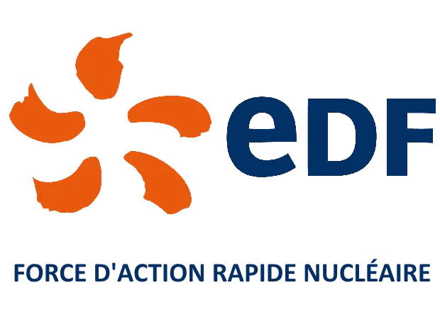
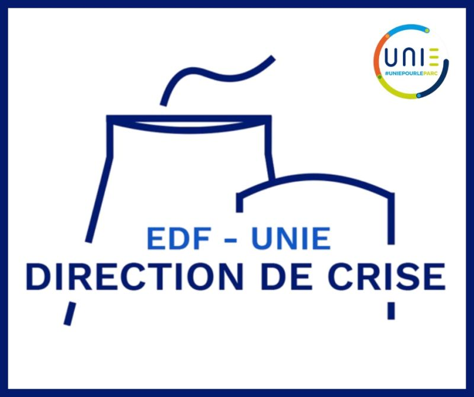
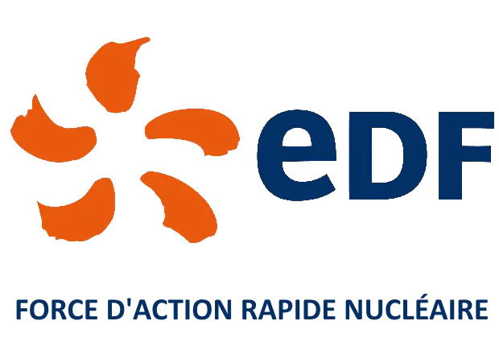
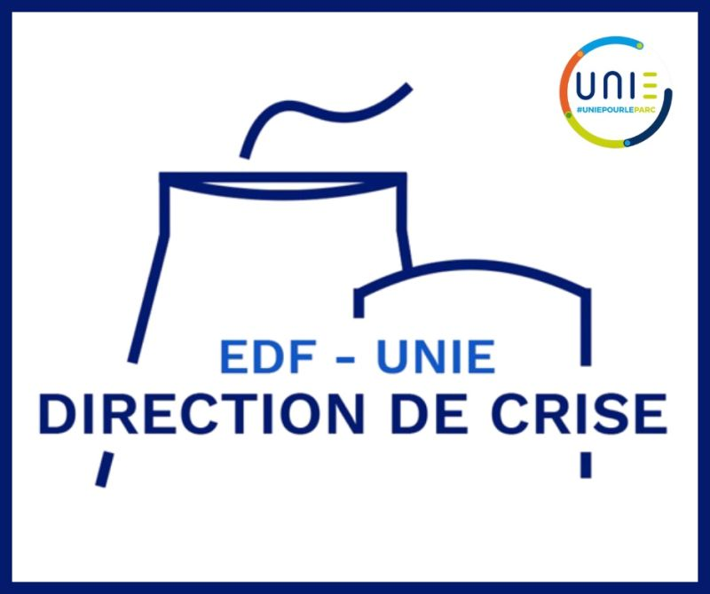

Spécialiste en résilience des infrastructures et sécurisation des flux critiques. Mon cursus BUT R&T m'apporte la maîtrise des protocoles standards, tandis que mon expérience chez EDF forge mon expertise sur les réseaux d'urgence.
S1 : INITIALISATION RÉSEAUX
Protocoles : Modèle OSI, IPv4/IPv6, ICMP.
Physique : Câblage VDI, Réflectométrie, RF.
Système : Linux CLI, Gestion des permissions.
S2 : ROUTAGE & SERVICES
Routage : OSPFv2, RIPv2, Routage statique.
Services : DNS (Bind9), DHCP, Apache2.
Com : ToIP (SIP), VoIP Codecs, QoS.
S3 : WAN & SÉCURITÉ
WAN : BGP (eBGP/iBGP), NAT/PAT.
Sécu : VPN IPSec, Firewalling Netfilter/iptables.
Dev : Automatisation Python & Bash.
EXPERTISE EDF (FARN)
Radio : TETRA (TMO/DMO), Propagation RF.
Sat : VSAT (Bande Ka), BGAN, Iridium.
Crypto : AES-256, Conteneurs VeraCrypt/EDS.
IP_NETWORKING_CAPACITY88%
TACTICAL_COMS_READY94%
::
DOSSIER_PREUVES_FKTL ::×
MISE EN SITUATION (Supervisée)
Déploiement et configuration BGAN
au agent FARN sous la supervision de mon tuteur.
 


